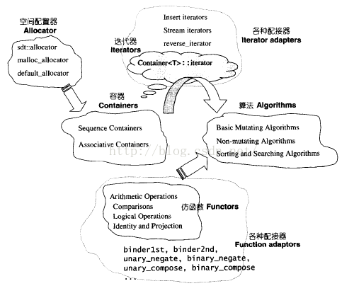
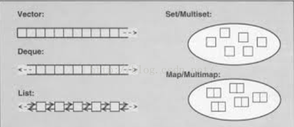
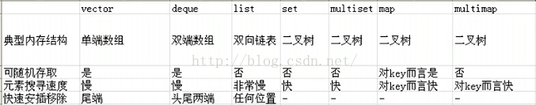
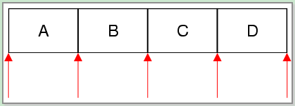
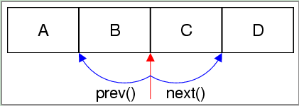
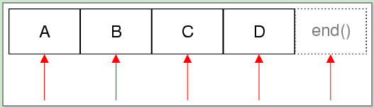

STL(Standard Template Library)的六大组件：容器(containers)、迭代器(iterators)、空间配置器(allocator)、配接器(adapters)、算法(algorithms)、仿函数(functors)六个部分。其交互关系：容器通过空间配置器取得数据存储空间，空间配置器通过迭代器存取容器的内容，仿函数可以协助空间配置器完成不同的策略变化，配接器可以修饰或套接仿函数。

C++中的容器类包括“顺序存储结构”和“关联存储结构”，前者包括vector，list，deque等；后者包括set，map，multiset，multimap等。若需要存储的元素数在编译器间就可以确定，可以使用数组来存储，否则，就需要用到容器类了。

1、vector
连续存储结构，每个元素在内存上是连续的；
支持高效的随机访问和在尾端插入/删除操作，但其他位置的插入/删除操作效率低下；
2、deque
连续存储结构，即其每个元素在内存上也是连续的，类似于vector，不同之处在于，deque提供了两级数组结构，第一级完全类似于vector，代表实际容器；另一级维护容器的首位地址。
这样，deque除了具有vector的所有功能外，还支持高效的首端插入/删除操作。
3、list
非连续存储结构，具有双链表结构，每个元素维护一对前向和后向指针，因此支持前向/后向遍历。
支持高效的随机插入/删除操作，但随机访问效率低下，且由于需要额外维护指针，开销也比较大。
4、vector -- list -- deque：
a、若需要随机访问操作，则选择vector；
b、若已经知道需要存储元素的数目， 则选择vector；
c、若需要随机插入/删除（不仅仅在两端），则选择list
d、只有需要在首端进行插入/删除操作的时候，才选择deque，否则都选择vector。
e、若既需要随机插入/删除，又需要随机访问，则需要在vector与list间做个折中。
f、当要存储的是大型负责类对象时，list要优于vector；当然这时候也可以用vector来存储指向对象的指针，同样会取得较高的效率，但是指针的维护非常容易出错，因此不推荐使用。
5、capacity -- size
a、capacity是容器需要增长之前，能够盛的元素总数；只有连续存储的容器才有capacity的概念（例如vector，deque，string），list不需要capacity。
b、size是容器当前存储的元素的数目。
c、vector默认的容量初始值，以及增长规则是依赖于编译器的。
6、用vector存储自定义类对象时，自定义类对象须满足：
a、有可供调用的无参构造函数（默认的或自定义的）；
b、有可用的拷贝赋值函数（默认的或自定义的）
7、迭代器iterator
a、vector与deque的迭代器支持算术运算，list的迭代器只能进行++/--操作，不支持普通的算术运算。
以下为整个列表概述：
标准容器类 | 说明 |
顺序性容器 | |
vector | 从后面快速的插入与删除，直接访问任何元素 |
deque | 从前面或后面快速的插入与删除，直接访问任何元素 |
list | 双链表，从任何地方快速插入与删除 |
关联容器 | |
set | 快速查找，不允许重复值 |
multiset | 快速查找，允许重复值 |
map | 一对多映射，基于关键字快速查找，不允许重复值 |
multimap | 一对多映射，基于关键字快速查找，允许重复值 |
容器适配器 | |
stack | 后进先出 |
queue | 先进先出 |
priority_queue | 最高优先级元素总是第一个出列 |
所有标准库共有函数
默认构造函数 | 提供容器默认初始化的构造函数。 |
复制构造函数 | 将容器初始化为现有同类容器副本的构造函数 |
析构函数 | 不再需要容器时进行内存整理的析构函数 |
empty | 容器中没有元素时返回true,否则返回false |
max_size | 返回容器中最大元素个数 |
size | 返回容器中当前元素个数 |
operator= | 将一个容器赋给另一个容器 |
operator< | 如果第一个容器小于第二个容器，返回true，否则返回false， |
operator<= | 如果第一个容器小于或等于第二个容器，返回true，否则返回false |
operator> | 如果第一个容器大于第二个容器，返回true，否则返回false |
operator>= | 如果第一个容器大于或等于第二个容器，返回true，否则返回false |
operator== | 如果第一个容器等于第二个容器，返回true，否则返回false |
operator!= | 如果第一个容器不等于第二个容器，返回true，否则返回false |
swap | 交换两个容器的元素 |
其中operator>,operator>=,operator<,operator<=,operator==,operator!=均不适用于priority_queue
顺序容器和关联容器共有函数
begin | 该函数两个版本返回iterator或const_iterator，引用容器第一个元素 |
end | 该函数两个版本返回iterator或const_iterator,引用容器最后一个元素后面一位 |
rbegin | 该函数两个版本返回reverse_iterator或const_reverse_iterator,引用容器最后一个元素 |
rend | 该函数两个版本返回reverse_iterator或const_reverse_iterator，引用容器第一个元素前面一位 |
erase | 从容器中清除一个或几个元素 |
clear | 清除容器中所有元素 |
下表显示了顺序容器和关联容器中常用的typedef，这些typedef常用于变量、参数和函数返回值的一般性声明。
value_type | 容器中存放元素的类型 |
reference | 容器中存放元素类型的引用 |
const_reference | 容器中存放元素类型的常量引用，这种引用只能读取容器中的元素和进行const操作 |
pointer | 容器中存放元素类型的指针 |
iterator | 指向容器中存放元素类型的迭代器 |
const_iterator | 指向容器中存放元素类型的常量迭代器，只能读取容器中的元素 |
reverse_iterator | 指向容器中存放元素类型的逆向迭代器，这种迭代器在容器中逆向迭代 |
const_reverse_iterator | 指向容器中存放元素类型的逆向迭代器，只能读取容器中的元素 |
difference_type | 引用相同容器的两个迭代器相减结果的类型（list和关联容器没有定义operator-） |
size_type | 用于计算容器中项目数和检索顺序容器的类型（不能对list检索） |
8.序列类容器
(1)vector向量相当于一个数组
在内存中分配一块连续的内存空间进行存储。支持不指定vector大小的存储。STL内部实现时，首先分配一个非常大的内存空间预备进行存储，即capacity（）函数返回的大小，当超过此分配的空间时再整体重新放分配一块内存存储，这给人以vector可以不指定vector即一个连续内存的大小的感觉。通常此默认的内存分配能完成大部分情况下的存储。
优点：(1) 不指定一块内存大小的数组的连续存储，即可以像数组一样操作，但可以对此数组进行动态操作。通常体现在push_back() pop_back()
(2) 随机访问方便，即支持[ ]操作符和vector.at()
(3) 节省空间。
缺点：(1) 在内部进行插入删除操作效率低。
(2) 只能在vector的最后进行push和pop，不能在vector的头进行push和pop。
(3) 当动态添加的数据超过vector默认分配的大小时要进行整体的重新分配、拷贝与释放
(2)list 双向链表
每一个结点都包括一个信息快Info、一个前驱指针Pre、一个后驱指针Post。可以不分配必须的内存大小方便的进行添加和删除操作。使用的是非连续的内存空间进行存储。
优点：(1) 不使用连续内存完成动态操作。
(2) 在内部方便的进行插入和删除操作
(3) 可在两端进行push、pop
缺点：(1) 不能进行内部的随机访问，即不支持[ ]操作符和vector.at()
(2) 相对于verctor占用内存多
(3) deque 双端队列 double-end queue
deque是在功能上合并了vector和list。
优点：(1) 随机访问方便，即支持[ ]操作符和vector.at()
(2) 在内部方便的进行插入和删除操作
(3) 可在两端进行push、pop
缺点：(1) 占用内存多
使用区别：
1）如果你需要高效的随即存取，而不在乎插入和删除的效率，使用vector
2）如果你需要大量的插入和删除，而不关心随机存取，则应使用list
3）如果你需要随机存取，而且关心两端数据的插入和删除，则应使用deque

以下对所有算法进行细致分类并标明功能：
<一>查找算法(13个)：判断容器中是否包含某个值
adjacent_find: 在iterator对标识元素范围内，查找一对相邻重复元素，找到则返回指向这对元素的第一个元素的ForwardIterator。否则返回last。重载版本使用输入的二元操作符代替相等的判断。
binary_search: 在有序序列中查找value，找到返回true。重载的版本实用指定的比较函数对象或函数指针来判断相等。
count: 利用等于操作符，把标志范围内的元素与输入值比较，返回相等元素个数。
count_if: 利用输入的操作符，对标志范围内的元素进行操作，返回结果为true的个数。
equal_range: 功能类似equal，返回一对iterator，第一个表示lower_bound，第二个表示upper_bound。
find: 利用底层元素的等于操作符，对指定范围内的元素与输入值进行比较。当匹配时，结束搜索，返回该元素的一个InputIterator。
find_end: 在指定范围内查找"由输入的另外一对iterator标志的第二个序列"的最后一次出现。找到则返回最后一对的第一个ForwardIterator，否则返回输入的"另外一对"的第一个ForwardIterator。重载版本使用用户输入的操作符代替等于操作。
find_first_of: 在指定范围内查找"由输入的另外一对iterator标志的第二个序列"中任意一个元素的第一次出现。重载版本中使用了用户自定义操作符。
find_if: 使用输入的函数代替等于操作符执行find。
lower_bound: 返回一个ForwardIterator，指向在有序序列范围内的可以插入指定值而不破坏容器顺序的第一个位置。重载函数使用自定义比较操作。
upper_bound: 返回一个ForwardIterator，指向在有序序列范围内插入value而不破坏容器顺序的最后一个位置，该位置标志一个大于value的值。重载函数使用自定义比较操作。
search: 给出两个范围，返回一个ForwardIterator，查找成功指向第一个范围内第一次出现子序列(第二个范围)的位置，查找失败指向last1。重载版本使用自定义的比较操作。
search_n: 在指定范围内查找val出现n次的子序列。重载版本使用自定义的比较操作。
<二>排序和通用算法(14个)：提供元素排序策略
inplace_merge: 合并两个有序序列，结果序列覆盖两端范围。重载版本使用输入的操作进行排序。
merge: 合并两个有序序列，存放到另一个序列。重载版本使用自定义的比较。
nth_element: 将范围内的序列重新排序，使所有小于第n个元素的元素都出现在它前面，而大于它的都出现在后面。重载版本使用自定义的比较操作。
partial_sort: 对序列做部分排序，被排序元素个数正好可以被放到范围内。重载版本使用自定义的比较操作。
partial_sort_copy: 与partial_sort类似，不过将经过排序的序列复制到另一个容器。
partition: 对指定范围内元素重新排序，使用输入的函数，把结果为true的元素放在结果为false的元素之前。
random_shuffle: 对指定范围内的元素随机调整次序。重载版本输入一个随机数产生操作。
reverse: 将指定范围内元素重新反序排序。
reverse_copy: 与reverse类似，不过将结果写入另一个容器。
rotate: 将指定范围内元素移到容器末尾，由middle指向的元素成为容器第一个元素。
rotate_copy: 与rotate类似，不过将结果写入另一个容器。
sort: 以升序重新排列指定范围内的元素。重载版本使用自定义的比较操作。
stable_sort: 与sort类似，不过保留相等元素之间的顺序关系。
stable_partition: 与partition类似，不过不保证保留容器中的相对顺序。
<三>删除和替换算法(15个)
copy: 复制序列
copy_backward: 与copy相同，不过元素是以相反顺序被拷贝。
iter_swap: 交换两个ForwardIterator的值。
remove: 删除指定范围内所有等于指定元素的元素。注意，该函数不是真正删除函数。内置函数不适合使用remove和remove_if函数。
remove_copy: 将所有不匹配元素复制到一个制定容器，返回OutputIterator指向被拷贝的末元素的下一个位置。
remove_if: 删除指定范围内输入操作结果为true的所有元素。
remove_copy_if: 将所有不匹配元素拷贝到一个指定容器。
replace: 将指定范围内所有等于vold的元素都用vnew代替。
replace_copy: 与replace类似，不过将结果写入另一个容器。
replace_if: 将指定范围内所有操作结果为true的元素用新值代替。
replace_copy_if: 与replace_if，不过将结果写入另一个容器。
swap: 交换存储在两个对象中的值。
swap_range: 将指定范围内的元素与另一个序列元素值进行交换。
unique: 清除序列中重复元素，和remove类似，它也不能真正删除元素。重载版本使用自定义比较操作。
unique_copy: 与unique类似，不过把结果输出到另一个容器。
<四>排列组合算法(2个)：提供计算给定集合按一定顺序的所有可能排列组合
next_permutation: 取出当前范围内的排列，并重新排序为下一个排列。重载版本使用自定义的比较操作。
prev_permutation: 取出指定范围内的序列并将它重新排序为上一个序列。如果不存在上一个序列则返回false。重载版本使用自定义的比较操作。
<五>算术算法(4个)
accumulate: iterator对标识的序列段元素之和，加到一个由val指定的初始值上。重载版本不再做加法，而是传进来的二元操作符被应用到元素上。
partial_sum: 创建一个新序列，其中每个元素值代表指定范围内该位置前所有元素之和。重载版本使用自定义操作代替加法。
inner_product: 对两个序列做内积(对应元素相乘，再求和)并将内积加到一个输入的初始值上。重载版本使用用户定义的操作。
adjacent_difference: 创建一个新序列，新序列中每个新值代表当前元素与上一个元素的差。重载版本用指定二元操作计算相邻元素的差。
<六>生成和异变算法(6个)
fill: 将输入值赋给标志范围内的所有元素。
fill_n: 将输入值赋给first到first+n范围内的所有元素。
for_each: 用指定函数依次对指定范围内所有元素进行迭代访问，返回所指定的函数类型。该函数不得修改序列中的元素。
generate: 连续调用输入的函数来填充指定的范围。
generate_n: 与generate函数类似，填充从指定iterator开始的n个元素。
transform: 将输入的操作作用与指定范围内的每个元素，并产生一个新的序列。重载版本将操作作用在一对元素上，另外一个元素来自输入的另外一个序列。结果输出到指定容器。
<七>关系算法(8个)
equal: 如果两个序列在标志范围内元素都相等，返回true。重载版本使用输入的操作符代替默认的等于操作符。
includes: 判断第一个指定范围内的所有元素是否都被第二个范围包含，使用底层元素的<操作符，成功返回true。重载版本使用用户输入的函数。
lexicographical_compare: 比较两个序列。重载版本使用用户自定义比较操作。
max: 返回两个元素中较大一个。重载版本使用自定义比较操作。
max_element: 返回一个ForwardIterator，指出序列中最大的元素。重载版本使用自定义比较操作。
min: 返回两个元素中较小一个。重载版本使用自定义比较操作。
min_element: 返回一个ForwardIterator，指出序列中最小的元素。重载版本使用自定义比较操作。
mismatch: 并行比较两个序列，指出第一个不匹配的位置，返回一对iterator，标志第一个不匹配元素位置。如果都匹配，返回每个容器的last。重载版本使用自定义的比较操作。
<八>集合算法(4个)
set_union: 构造一个有序序列，包含两个序列中所有的不重复元素。重载版本使用自定义的比较操作。
set_intersection: 构造一个有序序列，其中元素在两个序列中都存在。重载版本使用自定义的比较操作。
set_difference: 构造一个有序序列，该序列仅保留第一个序列中存在的而第二个中不存在的元素。重载版本使用自定义的比较操作。
set_symmetric_difference: 构造一个有序序列，该序列取两个序列的对称差集(并集-交集)。
<九>堆算法(4个)
make_heap: 把指定范围内的元素生成一个堆。重载版本使用自定义比较操作。
pop_heap: 并不真正把最大元素从堆中弹出，而是重新排序堆。它把first和last-1交换，然后重新生成一个堆。可使用容器的back来访问被"弹出"的元素或者使用pop_back进行真正的删除。重载版本使用自定义的比较操作。
push_heap: 假设first到last-1是一个有效堆，要被加入到堆的元素存放在位置last-1，重新生成堆。在指向该函数前，必须先把元素插入容器后。重载版本使用指定的比较操作。
sort_heap: 对指定范围内的序列重新排序，它假设该序列是个有序堆。重载版本使用自定义比较操作。
补充：
一、函数对象： 因为很多的算法中多使用了函数对象
二元函数对象，V1和V2为输入，V3为结果
plus<T>:
transform(V1.begin(), V1.end(), V2.begin(), V3.begin(),plus<double>());
其他的二元函数对象：minus,multiples,divieds,modulus.
二元断言函数对象，使用时需要bind2nd（）或bind1st（）来绑定比较对象。
less<T>:
find_if(L.begin(), L.end(), bind2nd(less<int>(), 0));
其他的二元断言函数：equal_to,notequal_to,greater,greater_equal,less_equal,logical_and,logical_or
二元逻辑函数
binary_negate:
const char* wptr = find_if(str, str + MAXLEN,
compose2(not2(logical_or<bool>()),
bind2nd(equal_to<char>(), ' '),
bind2nd(equal_to<char>(), '/n')));
一元函数对象
negate：
transform(V1.begin(), V1.end(), V2.begin(),
negate<int>());
一元断定函数对象
logical_not:
transform(V.begin(), V.end(), V.begin(), logical_not<bool>());
一元逻辑函数
unary_negate:
二、函数对象发生器：主要用来填充序列
产生不重复的随机数：
// Generate unique random numbers from 0 to mod:
class URandGen {
std::set<int> used;
int limit;
public:
URandGen(int lim) : limit(lim) {
srand(time(0));
}
int operator()() {
while(true) {
int i = int(rand()) % limit;
if(used.find(i) == used.end()) {
used.insert(i);
return i;
}
}
}
};
const int sz = 10;
const int max = 50;
vector<int> x(sz), y(sz), r(sz);
//An integer random number generator:
URandGen urg(max);
generate_n(x.begin(), sz, urg);
三、函数对象适配器 ： 将函数转化为函数对象
ptr_fun:一般函数适配器
一元实例：
transform(first, last, first,
compose1(negate<double>, ptr_fun(fabs)));
二元实例：
list<char*>::iterator item =
find_if(L.begin(), L.end(),
not1(binder2nd(ptr_fun(strcmp), "OK")));
not1：对一元的断定函数对象取反的适配器。
not2: 对二元的断定函数对象取反的适配器。
mem_fun与mem_fun_ref：类成员函数的适配器,区别是一个需要指针，而另一个仅需要一般对象。如下：
shape是一个指针变量，则foreach(v.begin(),v.end(),mem_fun(&shape::draw));
但如果shape是一般的变量，不是指针，则foreach（v.begin(),v.end(),mem_fun_ref(&shape::draw)）；
四、算法
拷贝：
copy（）
reverse_copy()
rotate_copy()
remove_copy() 拷贝不等于某值的元素到另一个序列。
remove_copy_if() 拷贝符合条件的到另一个序列。
填充和生成：
fill()
fill_n() 填充序列中的n个元素。
generate（）为序列中的每个元素调用gen（）函数。
排列：
next_permuttion() 后一个排列。
prev_permutation()
partition() 划分，将满足条件的元素移动到序列的前面。
stable_partition()
查找和替换：
find（）
binary_search() 在一个已经有顺序的序列上查找。
find_if()
search() 检查第二个序列是否在第一个序列中出现，且顺序相同。
删除：注意必须调用erase（）来真正删除
remove（）
unique（）删除相邻重复元素，最好现排序。
合并序列：
merge（）
数值算法：
accumulate（） 对序列的每个元素进行运算后求和。
transform（） 也可以对每个元素进行运算。
计数：
size（）总个数。
count（）等于某值的元素个数。
adjacent_difference 序列中的后一个减前与他相邻的前一个得到新的序列。
adiacent_find
五、所有的算法
accumlate ： iterator 对标志的序列中的元素之和，加到一个由 init 指定的初始值上。重载的版本不再做加法，而是传进来的二元操作符被应用到元素上。
adjacent_different ：创建一个新序列，该序列的每个新值都代表了当前元素与上一个元素的差。重载版本用指定的二元操作计算相邻元素的差。
adjacent_find ：在 iterator 对标志的元素范围内，查找一对相邻的重复元素，如果找到返回一个 ForwardIterator ，指向这对元素的第一个元素。否则返回 last 。重载版本使用输入的二元操作符代替相等的判断。
binary_search ：在有序序列中查找 value ，如果找到返回 true 。重载的版本使用指定的比较函数对象或者函数指针来判断相等。
copy ：复制序列。
copy_backward ：除了元素以相反的顺序被拷贝外，别的和 copy 相同。
count ：利用等于操作符，把标志范围类的元素与输入的值进行比较，并返回相等元素的个数。
count_if ：对于标志范围类的元素，应用输入的操作符，并返回结果为 true 的次数。
equal ：如果两个序列在范围内的元素都相等，则 equal 返回 true 。重载版本使用输入的操作符代替了默认的等于操作符。
equal_range ：返回一对 iterator ，第一个 iterator 表示由 lower_bound 返回的 iterator ，第二个表示由 upper_bound 返回的iterator 值。
fill ：将输入的值的拷贝赋给范围内的每个元素。
fill_n ：将输入的值赋值给 first 到 frist+n 范围内的元素。
find ：利用底层元素的等于操作符，对范围内的元素与输入的值进行比较。当匹配时，结束搜索，返回该元素的一个 InputIterator 。
find_if ：使用输入的函数替代了等于操作符执行了 find 。
find_end ：在范围内查找“由输入的另外一个 iterator 对标志的第二个序列”的最后一次出现。重载版本中使用了用户输入的操作符替代等于操作。
find_first_of ：在范围内查找“由输入的另外一个 iterator 对标志的第二个序列”中的任意一个元素的第一次出现。重载版本中使用了用户自定义的操作符。
for_each ：依次对范围内的所有元素执行输入的函数。
generate ：通过对输入的函数 gen 的连续调用来填充指定的范围。
generate_n ：填充 n 个元素。
includes ：判断 [first1, last1) 的一个元素是否被包含在另外一个序列中。使用底层元素的 <= 操作符，重载版本使用用户输入的函数。
inner_product ：对两个序列做内积 ( 对应的元素相乘，再求和 ) ，并将内积加到一个输入的的初始值上。重载版本使用了用户定义的操作。
inner_merge ：合并两个排过序的连续序列，结果序列覆盖了两端范围，重载版本使用输入的操作进行排序。
iter_swap ：交换两个 ForwardIterator 的值。
lexicographical_compare ：比较两个序列。重载版本使用了用户自定义的比较操作。
lower_bound ：返回一个 iterator ，它指向在范围内的有序序列中可以插入指定值而不破坏容器顺序的第一个位置。重载函数使用了自定义的比较操作。
max ：返回两个元素中的较大的一个，重载版本使用了自定义的比较操作。
max_element ：返回一个 iterator ，指出序列中最大的元素。重载版本使用自定义的比较操作。
min ：两个元素中的较小者。重载版本使用自定义的比较操作。
min_element ：类似与 max_element ，不过返回最小的元素。
merge ：合并两个有序序列，并存放到另外一个序列中。重载版本使用自定义的比较。
mismatch ：并行的比较两个序列，指出第一个不匹配的位置，它返回一对 iterator ，标志第一个不匹配的元素位置。如果都匹配，返回每个容器的 last 。重载版本使用自定义的比较操作。
next_permutation ：取出当前范围内的排列，并将其重新排序为下一个排列。重载版本使用自定义的比较操作。
nth_element ：将范围内的序列重新排序，使所有小于第 n 个元素的元素都出现在它前面，而大于它的都出现在后面，重载版本使用了自定义的比较操作。
partial_sort ：对整个序列做部分排序，被排序元素的个数正好可以被放到范围内。重载版本使用自定义的比较操作。
partial_sort_copy ：与 partial_sort 相同，除了将经过排序的序列复制到另外一个容器。
partial_sum ：创建一个新的元素序列，其中每个元素的值代表了范围内该位置之前所有元素之和。重载版本使用了自定义操作替代加法。
partition ：对范围内元素重新排序，使用输入的函数，把计算结果为 true 的元素都放在结果为 false 的元素之前。
prev_permutation ：取出范围内的序列并将它重新排序为上一个序列。如果不存在上一个序列则返回 false 。重载版本使用自定义的比较操作。
random_shuffle ：对范围内的元素随机调整次序。重载版本输入一个随机数产生操作。
remove ：删除在范围内的所有等于指定的元素，注意，该函数并不真正删除元素。内置数组不适合使用 remove 和 remove_if 函数。
remove_copy ：将所有不匹配的元素都复制到一个指定容器，返回的 OutputIterator 指向被拷贝的末元素的下一个位置。
remove_if ：删除所有范围内输入操作结果为 true 的元素。
remove_copy_if ：将所有不匹配的元素拷贝到一个指定容器。
replace ：将范围内的所有等于 old_value 的元素都用 new_value 替代。
replace_copy ：与 replace 类似，不过将结果写入另外一个容器。
replace_if ：将范围内的所有操作结果为 true 的元素用新值替代。
replace_copy_if ：类似与 replace_if ，不过将结果写入另外一个容器。
reverse ：将范围内元素重新按反序排列。
reverse_copy ：类似与 reverse ，不过将结果写入另外一个容器。
rotate ：将范围内的元素移到容器末尾，由 middle 指向的元素成为容器第一个元素。
rotate_copy ：类似与 rotate ，不过将结果写入另外一个容器。
search ：给出了两个范围，返回一个 iterator ，指向在范围内第一次出现子序列的位置。重载版本使用自定义的比较操作。
search_n ：在范围内查找 value 出现 n 次的子序列。重载版本使用自定义的比较操作。
set_difference ：构造一个排过序的序列，其中的元素出现在第一个序列中，但是不包含在第二个序列中。重载版本使用自定义的比较操作。
set_intersection ：构造一个排过序的序列，其中的元素在两个序列中都存在。重载版本使用自定义的比较操作。
set_symmetric_difference ：构造一个排过序的序列，其中的元素在第一个序列中出现，但是不出现在第二个序列中。重载版本使用自定义的比较操作。
set_union ：构造一个排过序的序列，它包含两个序列中的所有的不重复元素。重载版本使用自定义的比较操作。
sort ：以升序重新排列范围内的元素，重载版本使用了自定义的比较操作。
stable_partition ：与 partition 类似，不过它不保证保留容器中的相对顺序。
stable_sort ：类似与 sort ，不过保留相等元素之间的顺序关系。
swap ：交换存储在两个对象中的值。
swap_range ：将在范围内的元素与另外一个序列的元素值进行交换。
transform ：将输入的操作作用在范围内的每个元素上，并产生一个新的序列。重载版本将操作作用在一对元素上，另外一个元素来自输入的另外一个序列。结果输出到指定的容器。
unique ：清除序列中重复的元素，和 remove 类似，它也不能真正的删除元素。重载版本使用了自定义的操作。
unique_copy ：类似与 unique ，不过它把结果输出到另外一个容器。
upper_bound ：返回一个 iterator ，它指向在范围内的有序序列中插入 value 而不破坏容器顺序的最后一个位置，该位置标志了一个大于 value 的值。重载版本使用了输入的比较操作。
堆算法： C++ 标准库提供的是 max-heap 。一共由以下 4 个泛型堆算法。
make_heap ：把范围内的元素生成一个堆。重载版本使用自定义的比较操作。
pop_heap ：并不是真正的把最大元素从堆中弹出，而是重新排序堆。它把 first 和 last-1 交换，然后重新做成一个堆。可以使用容器的 back 来访问被“弹出“的元素或者使用 pop_back 来真正的删除。重载版本使用自定义的比较操作。
push_heap ：假设 first 到 last-1 是一个有效的堆，要被加入堆的元素在位置 last-1 ，重新生成堆。在指向该函数前，必须先把元素插入容器后。重载版本使用指定的比较。
sort_heap ：对范围内的序列重新排序，它假设该序列是个有序的堆。重载版本使用自定义的比较操作
Qt容器类的分类：
1.连续容器：QVector、QLinkedList、QList、QStack（继承QVector）、 QQueue（继承QList）
2.关联容器：QSet、QMap、QMultiMap、QHash、QMultiHash
QList<T> QLinkList<T> QVarLengthArray<T>提供类似的功能。
可以参考帮助文档，查看QList的具体使用方法，以下列出部分使用示例：
1.创建各种类型的vector：
QVector<int> integerVector;
QVector<QString> stringVector;
2.创建一定数目项的vector
QVector<QString> vector(200);
3.带初始化的创建vector
QVector<QString> vector(200, "Pass");
也可以使用fill赋值：
QVector<QString> vector(3);
vector.fill("Yes");
// vector: ["Yes", "Yes", "Yes"]
vector.fill("oh", 5);
// vector: ["oh", "oh", "oh", "oh", "oh"]
4.QVector像c++的Vector一样提供[]下标操作，并从0项开始。还提供at()的只读操作,at()比[]更快，因为它不会导致深度复制。
if (vector[0] == "Liz")
vector[0] = "Elizabeth";
for (int i = 0; i < vector.size(); ++i) {
if (vector.at(i) == "Alfonso")
cout << "Found Alfonso at position " << i << endl;
}
5.你可以使用indexOf，lastIndexOf来查询获取某项值的索引：
QVector<QString> vector;
vector << "A" << "B" << "C" << "B" << "A";
vector.indexOf("B"); // returns 1
vector.indexOf("B", 1); // returns 1
vector.indexOf("B", 2); // returns 3
vector.indexOf("X"); // returns -1
vector.lastIndexOf("B"); // returns 3
vector.lastIndexOf("B", 3); // returns 3
vector.lastIndexOf("B", 2); // returns 1
vector.lastIndexOf("X"); // returns -1
也可以用contains()查看是否包含某元素，返回bool值。
6.通过append，operator<<，prepend，insert添加元素。（对于较大的vector来说，在开头和中间插入项都是相当耗时的。这种情况更适合使用QLinkedList<T>）
QVector<QString> vector(0);
vector.append("one");
vector.append("two");
vector.append("three");
// vector: ["one", "two", "three"]
QVector<QString> vector(0);
vector << “one” << “two” << “three”;
// vector: ["one", "two", "three"]
QVector<QString> vector;
vector.prepend("one");
vector.prepend("two");
vector.prepend("three");
// vector: ["three", "two", "one"]
QVector<QString> vector;
vector << "alpha" << "beta" << "delta";
vector.insert(2, "gamma");
// vector: ["alpha", "beta", "gamma", "delta"]
7.size() resize() isEmpty() capacity()等和容器大小相关操作。
8.相关转化：toList() toStdVector()
QVector<double> vect;
vect << "red" << "green" << "blue" << "black";
QList<double> list = vect.toList();
// list: ["red", "green", "blue", "black"]
QVector<double> vector;
vector << 1.2 << 0.5 << 3.14;
std::vector<double> stdvector = vector.toStdVector();
（以下容器操作函数的使用将不再累述，和查阅帮助文档，并且和QVector的使用方法是一样的。）
QLinkedList<T>
前面提到，它适合随机插入项，其原因是它的链式结构。他提供了常量时间的插入删除，却不能提供快速的随机存取操作。不提供[]操作，它的遍历元素是通过迭代器完成的。
QList<T>
它是个数组列表，结合了上面两种结构的优点，它支持随机存取，在它的任意一端插入和删除都是非常快速的并且对于千项以上的列表，在中间插入和删除也是很快的。学过数据结构的都会清楚这三者的结构区别。如果非要每个项元素都相邻那就只能用QVector。
QString<t>
它是QList<QString>的子类，它为字符串操作提供了更通用的操作。
QStack<T> QQueue<T>
他们是栈和队列结构的实现，QStack提供pop() push() swap() top()操作，它继承自QVector<T>
QQueue<T>提供dequeue() enqueue() head() swap操作。继承自QList<T>。
QSet<T>
它提供一个键值对集合，可以快速的进行查找，
QMap<Key, T> QMultiMap<Key, T>
QMap是一个以升序键顺序存储键值对的数据结构，QMultiMap是QMap基础上提供可以存储多值的maps，这样就是说一个键对应多个值了。
下面是创建一个QString-int的maps
QMap<QString, int> map;
可以这样插入值
map["one"] = 1;
map["three"] = 3;
map["seven"] = 7;
也可以这样：
map.insert("twelve", 12);
查询一个值使用[] 或者value(“**”)
int num1 = map["thirteen"];
int num2 = map.value("thirteen");
查询是否存在一个值：
if (map.contains("TIMEOUT"))
timeout = map.value("TIMEOUT");
一般推荐使用contains() value()而不是[]。
QHash<Key, T> QMultiHash<Key, T>
QHash<Key, T>是个在哈希表中存储键值对的结构。它的接口几乎和QMap相同，但它提供了更快的查找功能。
QHash为它的内部哈希表自动分配最初的存储区域，并在有项被插入或者删除时重新划分所分配的区域大小。也可以调用reserve()或者squeeze()来指定或者压缩希望存储到哈希表的项的数目，以进行性能调整。通常的做法是利用我们预期的最大的项的数目来调用reserve()，然后插入数据，最后如果有多出的项，则调用squeeze()以使内存减到最小。
对于每种容器都有两种风格的迭代器——java风格和STL风格。Java风格的更易于使用而以很少量性能作为了代价，而STL风格的可以结合STL的算法从而更加强大。
这里我们主讲QList和QMap的迭代器为例。
Java-Style：
Java风格的迭代器分为两种：只读迭代器，读写迭代器。只读迭代器就是Q*Iterator<T> (例如QVectorIterator<T>)，而读写迭代器则像QMutable*Iterator<T>这种（例如：QMutableVectorIterator<T>）。
Containers | Read-only iterator | Read-write iterator |
QLinkedList<T> | ||
QSet<T> | QSetIterator<T> | |
QMapIterator<Key, T> | QMutableMapIterator<Key, T> | |
QHash<Key, T>, QMultiHash<Key, T> | QHashIterator<Key, T> | QMutableHashIterator<Key, T> |
Java风格迭代器的有效位置：

下面是一个典型的使用例子：
QList<QString> list;
list << "A" << "B" << "C" << "D";
QListIterator<QString> i(list);
while (i.hasNext())
qDebug() << i.next();
下面展示如何向后遍历
QListIterator<QString> i(list);
i.toBack();
while (i.hasPrevious())
qDebug() << i.previous();
如果左边有项那么hasPrevious()将返回true。previous()返回迭代器左边的项并且往前移一个位置。可以看如图：

下表是QListIterator 的API及说明
Function | Behavior |
迭代器移到最前，第一项的前 | |
迭代器移到最后，最后一项的后面 | |
如果不是list的最后，就返回true | |
返回下一项，并迭代器向后移一位 | |
返回下一项，迭代器并不移动 | |
如果不是list的最前，就返回true | |
返回前一项，并迭代器向后移一位 | |
返回前一项，迭代器并不移动 |
下面是Mutable iterator读写迭代器使用说明：
QList<int>移除基数项：
QMutableListIterator<int> i(list);
while (i.hasNext()) {
if (i.next() % 2 != 0)
i.remove();
}
下面是QMap的迭代器示例，用法和前面是类似的：
QMap<QString, QString> map;
map.insert("Paris", "France");
map.insert("Guatemala City", "Guatemala");
map.insert("Mexico City", "Mexico");
map.insert("Moscow", "Russia");
...
QMutableMapIterator<QString, QString> i(map);
while (i.hasNext()) {
if (i.next().key().endsWith("City"))
i.remove();
}
QMap<int, QWidget *> map;
QHash<int, QWidget *> hash;
QMapIterator<int, QWidget *> i(map);
while (i.hasNext()) {
i.next();
hash.insert(i.key(), i.value());
}
STL-Style:
STL风格是迭代器不仅支持Qt的通用算法，还兼容STL的。
和java风格的类似，它也有两种风格的迭代器，只读的（const_iterator）和读写的（iterator）。
Containers | Read-only iterator | Read-write iterator |
QList<T>::const_iterator | QList<T>::iterator | |
QLinkedList<T> | QLinkedList<T>::const_iterator | QLinkedList<T>::iterator |
QVector<T>::const_iterator | QVector<T>::iterator | |
QSet<T> | QSet<T>::const_iterator | QSet<T>::iterator |
QMap<Key, T>::const_iterator | QMap<Key, T>::iterator | |
QHash<Key, T>, QMultiHash<Key, T> | QHash<Key, T>::const_iterator | QHash<Key, T>::iterator |
用过c++ STL库的就对此很容易上手。下面是QListIterator的例子：
QList<QString> list;
list << "A" << "B" << "C" << "D";
QList<QString>::iterator i;
for (i = list.begin(); i != list.end(); ++i)
*i = (*i).toLower();
STL风格的迭代器可允许的位置与java风格的有所不同

遍历需要我们自己增加缩减迭代器，例如：
QList<QString>::const_iterator i;
for (i = list.constBegin(); i != list.constEnd(); ++i)
qDebug() << *i;
QList<QString> list;
list << "A" << "B" << "C" << "D";
QList<QString>::iterator i = list.end();
while (i != list.begin()) {
--i;
*i = (*i).toLower();
}
下面是QMap的例子：
QMap<int, int> map;
...
QMap<int, int>::const_iterator i;
for (i = map.constBegin(); i != map.constEnd(); ++i)
qDebug() << i.key() << ":" << i.value();
下面这个用foreach去遍历QLinkedList<QString>
QLinkedList<QString> list;
...
QString str;
foreach (str, list)
qDebug() << str;
可以再循环里使用break
QLinkedList<QString> list;
...
foreach (const QString &str, list) {
if (str.isEmpty())
break;
qDebug() << str;
}
QMap 和 QHash 中，如果你想遍历键和值，你可以用iterators(更快)，或者这样写：
QMap<QString, int> map;
...
foreach (const QString &str, map.keys())
qDebug() << str << ":" << map.value(str);
或者：
QMultiMap<QString, int> map;
...
foreach (const QString &str, map.uniqueKeys()) {
foreach (int i, map.values(str))
qDebug() << str << ":" << i;
}
QVarLengthArray<T>
C++不支持在栈内存中提供可变长度的数组，例如下面：
int myfunc(int n)
{
int table[n + 1]; // WRONG
...
return table[n];
}
只能在堆内存中实现：
int myfunc(int n)
{
int *table = new int[n + 1];
...
int ret = table[n];
delete[] table;
return ret;
}
但是如果myfunc在应用程序内循环中调用非常频繁，那么堆内存分配将会变得缓慢，这种情况，QT为我们提供了QVarLengthArray来解决。
int myfunc(int n)
{
QVarLengthArray<int, 1024> array(n + 1);
...
return array[n];
}
值得注意的是，1.它的API是低水平的(low-level)的，他没有提供迭代器，和QVector的功能函数。2.如果值是基本类型，它将不会初始化内存。3.QVector使用隐含共享作为内存的优化，QVarLengthArray并没有提供，然而，它因为减少了经常性消费而显得性能稍微好些，特别是在紧凑的循环里。总的来说，它是为了方便用户使用在很少部分情况。
QCache<Key, T>
提供一个cache去存储Key-T键值对的对象。例如：
QCache<int, Employee> cache;
插入对象到cache
Employee *employee = new Employee;
employee->setId(37);
employee->setName("Richard Schmit");
...
cache.insert(employee->id(), employee);
QCache的好处是自动获取的对象的拥有权（ownership）。你可以指定插入对象的花费，totalCost() maxCost()。maxCost()默认是100。
QCache<int, MyDataStructure> cache(5000);
QContiguousCache<T>
QContiguousCache是一个提供连续Cache存储器的模板类。和QCache不同的是，它要求一个约束——相邻（Contiguous）。这有利于用户交互界面最普遍的数据需求。这样的约束使它比QCache消耗更少的内存和处理器周期。
简单的使用QContiguousCache的方式是使用append() prepend()
MyRecord record(int row) const
{
Q_ASSERT(row >= 0 && row < count());
while(row > cache.lastIndex())
cache.append(slowFetchRecord(cache.lastIndex()+1));
while(row < cache.firstIndex())
cache.prepend(slowFetchRecord(cache.firstIndex()-1));
return cache.at(row);
}
可以查看文档中Contiguous Cache Example的例子。
QPair<T1, T2>
这个在STL中也是有的（pair）用来储存键值对。它用得更多的是做为函数的返回值。
看下面这个例子：存储一个QString键double值的QPair
QPair<QString, double> pair;
使用first second来修改值
pair.first = "pi";
pair.second = 3.14159265358979323846;
Constant time: O(1). 常数时间复杂度
Logarithmic time: O(log n). 对数时间复杂度
Linear time: O(n). 线性时间复杂度
Linear-logarithmic time: O(n log n). 线性对数时间复杂度
Quadratic time: O(n²). 平方时间复杂度
顺序容器类操作时间复杂度比较：
Index lookup | Insertion | Prepending | Appending | |
QLinkedList<T> | O(n) | O(1) | O(1) | O(1) |
QList<T> | O(1) | O(n) | Amort. O(1) | Amort. O(1) |
QVector<T> | O(1) | O(n) | O(n) | Amort. O(1) |
关联容器时间复杂度比较：